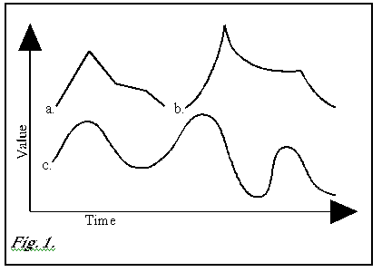
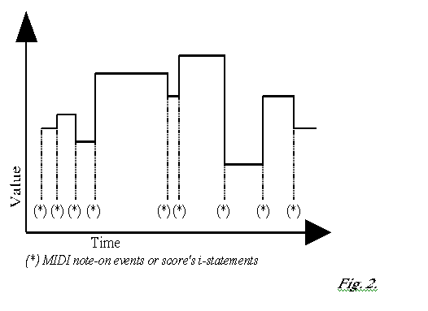

This proposal concerns the well-known sound-synthesis language Csound. Some additions have been made in order to use Csound in real-time. These additions allow a live control of the synthesis process with the Windows operating system. The aim is to give the user a powerful and low-cost workstation to produce new sounds and new music interactively and also to make live performances. Try to imagine Csound being a universal musical instrument.
Csound is one of the most famous sound-synthesis languages. At the beginning of the ‘90s its author, Berry Vercoe, has added some MIDI oriented opcodes to use it in real-time. At that time the only machines capable to run Csound in real-time, were the Silicon Graphics and some other expensive UNIX workstations. Some years later the Intel-based PCs became fast enough to run Csound in real-time, but at first they were capable to accomplish this task only under the LINUX OS, and without any MIDI support. DOS and Windows were rigorously kept off the real-time dream.
Now low-latency AUDIO support, MIDI support and many MIDI opcodes have been implemented under Windows, to allow the user to control Csound as it could be a sort of musical instrument.
What is the difference in using Csound in real-time rather than using it in deferred-time? For what reason should a composer prefer to use it in real-time? The more trivial reason is that running Csound redirecting its output to the audio-DACs (instead of writing the output on a file) saves both space on the hard-disk and time to listen to the result; it can be quite useful when composing a piece, because normally a lot of tests are necessary to achieve the composer expectations. In this case real-time is not essential, it is only more convenient.
But there are cases in which real-time is indispensable. What about if a composer decides to make a piece in which some musical parameters are fixed, but other ones are modifiable during the performance? And if he wants to control a MIDI synthesiser by means of his favourite Csound algorithm or pitch tables? And if a performer needs a synthesiser capable of completely new synthesis methods, which aren’t implemented in any hardware synths yet? Real-time becomes also necessary when some non-intuitive parameters of the composition need to be defined accurately by means of the composer’s ears.
In Csound there are three kinds of signals: i-rate (initialisation stage variables), k-rate (control rate variables) and a-rate (audio rate variables) signals.
The k-rate and a-rate
signals can be considered continuous from the user point
of view. This means that these two kinds of signals can be thought
as slanting-straight lines or curves (Fig.1 a,b,c).

The k-rate signals are normally used to control the behaviour of a generator unit or a modifier unit. Sometimes it is recommended to use a-rate for control signals too, for example when the amplitude envelope of an audio generator has got fast transients, or when an LFO must control a flanger delay. In these cases audible distortion occurs if k-rate is used, so it is necessary to use a-rate.
On the other hand, i-rate values cannot be considered exactly as signals. In fact they remain constant for the entire duration of a Csound note event. If one imagined them in a graph, he could think them as a stepped picture (Fig.2). Each step refers to an i-statement of Csound score or to a note-on MIDI message recognised by the MIDI IN port.

Further, i-rate, k-rate and a-rate signals can be considered in two different ways from Csound instruments point of view:
internally-generated
externally-received
For example, Csound score p-fields are externally-received i-rate values, because they are not defined inside the instrument block, but externally, in the score. Global k-rate and a-rate signals are internally-generated by an instrument, but they can be considered as externally-received from the target-instruments point of view. Obviously incoming MIDI control-change messages are externally-received signals. Signals sent to the MIDI OUT port are internally-generated.
Externally-received k-rate signals will be named continuous
parameters, and externally-received i-rate values
init parameters. a-rate signals will not
be taken into account, because normally they are not used as real-time
control signals, but they are as audio signals. So it is possible
to draw a table:
| SIGNALS | Initialisation values | Control signals | Audio signals | Continuous parameters | Init parameters | MIDI input | MIDI output | |
| i-rate |
|
|
||||||
| internally-generated | k-rate |
|
|
|||||
| a-rate |
|
|
||||||
| i-rate |
|
|
|
|||||
| externally - received | k-rate |
|
|
|
||||
| a-rate |
|
note 2: Signals received by the MIDI-input opcodes operate at i-rate and k-rate. Note-on messages are init-parameters. Control-change, aftertouch and pitch-bend messages are continuous parameters.
Notice also that signals received
by the MIDI-input opcodes operate at i-rate and k-rate.
Note-on messages are init-parameters, whereas control-change,
aftertouch and pitch-bend messages are continuous parameters.
A running instance of a Csound-orchestra’s instrument can be activated in two ways: by the score and by a MIDI note-on message. So there are two kinds of instruments:
SA Instruments (Score Activated instruments)
MA Instruments (MIDI Activated instruments)
MA and SA instruments can coexist in the same Csound orchestra. If an orchestra contains only MA instruments, and function tables are not used (for example when using the ‘pluck’ opcode to produce the sound), a Csound score could be an almost empty file. In that case, the only statement which must be present in the score is the f0 statement, followed by the action time (which must be equal to the total duration of the performance). This statement is required to avoid a zero-seconds duration of the real-time session.
MA instruments can contain the following Csound opcodes (whereas SA instruments cannot):
notnum, veloc, cpsmidi, cpsmidib, cpsmidib, octmidi, octmidib, octmidib, pchmidi, pchmidib, pchmidib, ampmidi, aftouch, chpress, pchbend, midictrl, midictrl, midictrlsc, imidic7, midic7, imidic14, midic14, imidic21, midic21
Notice that none of these opcode contains MIDI channel as an argument. If one of these opcodes is included into an SA instrument, unpredictable errors could occur.
In most cases the midi-channel number of a note-on or control-change message is the same as the instr number to be activated, however they can be reassigned by means of the massign opcode. If massign is not used, MA instruments must be numbered 1 to 16.
As in the following MIDI-oriented opcodes an input argument with MIDI channel information is present, they can be used in SA instruments:
ictrl7, ctrl7, ictrl14, ctrl14, ictrl21, ctrl21, chanctrl, chanctrl, initc7, initc14, initc21, slider8, slider16, slider8f, slider16f, islider8, islider16.
SA and MA instruments can cooperate in the same orchestra. For example, an SA instrument can contain several instances of ‘ctrl7’ opcode, each one defining a different continuous-parameter. Each parameter is stored in a global variable. So the corresponding continuous-parameter is shared by all the instances of the MA instrument. It is a sort of sending/receiving process inside the same Csound orchestra: performer actions are received by the MIDI-IN port; an SA instrument containing some midi opcodes transforms these messages in global variables; these global variables (which are the actual continuous-parameters) are read by an MA instrument. In this case, the SA-instrument-instance’s life begins at the start of Csound and lasts all the duration of the real-time session, whereas MA-instrument-instances’s action-times and durations depend on the performer’s actions.
The first way can be considered as the most trivial one. A normal orchestra contains only SA instruments and no parameters are modified during the performance, because all the informations are contained in the orchestra/score pair. No MIDI opcodes are used in this case, and sound output is identical to that of the wave-file produced by running a deferred-time Csound session with the same orchestra/score pair. This way can be useful to reduce the waiting time of wave-file processing and to eliminate the necessity of a big hard-disk storage space, but in every respect this method is identical to deferred-time by the hearing point of view.
The second way is the opposite to the first. According to this way, it is possible to consider Csound a MIDI synthesiser (the most powerful synth in the world!). This synth can be connected to a MIDI master-keyboard for a piano-like performance; furthermore it is possible to play Csound with controllers different from a piano keyboard, such as wind controllers, guitar controllers, drum controllers etc. In this case no p-fields are present in the score. All the init and continuous parameters are received via MIDI. Each note is activated by a MIDI note-on message and deactivated by a note-off message. So init parameters are defined by the informations contained in a note-on message: the orchestra instrument number is selected by the MIDI channel, the MIDI note-number and the velocity can be used to set two additional init parameters (this task can be accomplished by using the notnum, cpsmidi, octmidi, pchmidi, veloc and ampmidi opcodes). Other init parameters can be set by sampling and holding the current status of Csound controller array at the instr initialisation stage (this task can be accomplished by using imidic7, imidic14, imidic21, ictrl7, ictrl14, ictrl21, islider8, islider16, islider32, islider64, is16b14 and is32b14 opcodes in an MA instrument). It is suggested to use a MIDI mixer or the VMCI program (see below for more informations on it) to control a controllers bank. It is possible to use VMCI as a synth-editor for Csound by designing an instrument with a big number of init-rate controller opcodes, each one defining a particular patch-parameter. For example, the amplitude envelope ADSR durations and levels of an instrument can be assigned to a bank of sliders. So a Csound instrument can be considered as the type of synth-algorithm used, in which each slider configuration (when using VMCI this configuration can be saved on disk) becomes the particular synth-patch that can be edited according to user taste. Continuous parameters can be modified via MIDI by gestural actions of the performer by means of devices such as control-sliders, modulation-wheels, breath-controls, pitch-wheels, aftertouch etc. (the opcodes implemented to accomplish these tasks are: aftouch, chpress, pchbend, midictrl, midictrlsc, midic7, midic14, midic21, ctrl7, ctrl14, ctrl21, slider8, slider16, slider32, slider64, slider8f, slider16f, slider32f, slider64f, s16b14 and s32b14).
The third way to use Csound in real-time is joining SA instruments to some parameters which are modifiable in real-time by a MIDI controller during the score performance. In this case each note has its p-fields already defined in the score, but there can be some additional init or continuous parameters that can be modified at performance time. The action-time and the duration of each note are fixed, but the metronomic speed of the performance can be changed in real-time by the user. Any kind of parameter can be assigned to a live controller. This can enrich the concert performances: each time the composition will acquire a new flavour, it will never be exactly the same.
The fourth way to use Csound reminds us a little the old and cheap Casio keyboards "one-key-play" mode. In this mode, note-on messages are used to trigger the note-events, that are pulled out from a queue of note-parameter blocks stored into a table, i.e. all the init-parameters of each note have to be stored into a table. Note-off messages are used to deactivate a playing note. Overlapping notes, as well as polyphony are allowed. All the init parameters used in a conventional SA instrument can be ported to a real-time activated instrument (MA instrument) when using this method. I like to play Csound in this way very much, because it is possible to define a lot of very precise parameters for each note, but the activation time and the duration of each note is decided by the performer at performance time. This enables the user to control all these interpretative nuances of time such as ritardando and accelerando, very difficult to define with precision at the score-design time. Also, two additional init-values can be used to control any kind of parameter; these values are obtained by the note-number and the velocity of each note played at performance time. A section of an SA instrument of a standard score can be easily converted to be used with the "one-key-play" mode. The new GEN 23 function-table generator subroutine, which reads numeric values from an external ASCII file, can be used to do this job.
The main features added to this Windows version of Csound are: